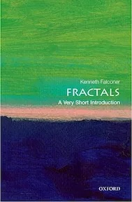
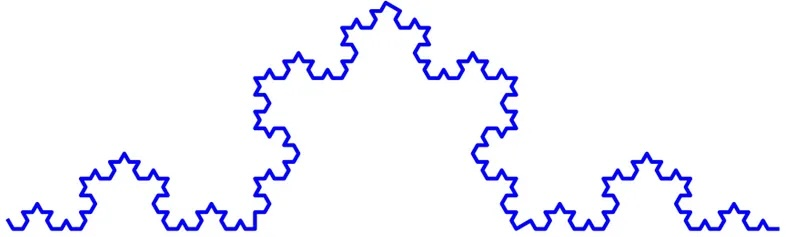
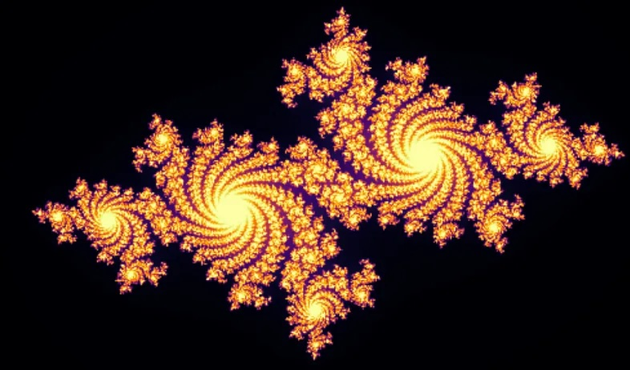
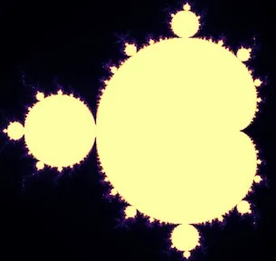

February 20, 2025
(This article originally appeared on Cantor's Paradise, Medium.)

Years ago, I had the opportunity to meet Benoit Mandelbrot, the “Father of Fractals”, at a mathematics conference. He was a towering figure in fractal geometry, surrounded by enthusiastic students eager to speak with him. I asked him to sign my copy of The Fractal Geometry of Nature, which now holds a proud place on my bookshelf.
Recently, while browsing my local library, I came across a tiny volume called Fractals: A Very Short Introduction. I picked it up on a whim and read through it in a couple of days.
Part of Oxford University Press's Very Short Introduction series — known for providing concise yet engaging overviews of a vast range of subjects — this book serves as an accessible entry point into the world of fractal geometry.
Kenneth Falconer, CBE FRSE, is a distinguished mathematician and Regius Professor of Mathematics at the University of St. Andrews. He has authored five books, published over 130 mathematical articles, and spoken at numerous international conferences. He is well known and respected in the field of fractal geometry.
This book offers a clear and approachable introduction to fractals. The concepts are explained using only basic mathematical principles — nothing more complicated than logarithms are used, and even these are explained in the text. For readers interested in exploring further, a Further Reading section provides additional references for deeper study.
Summary
The book aims to explain what fractals are, how they are constructed, some fascinating ideas about them, and why they matter in the real world.

The first chapter introduces fractal geometry, explaining what it is, how it differs from classical geometry, and its key properties. It also covers fundamental mathematical concepts such as the plane, functions, and iteration, along with real-world applications. To illustrate these ideas, the author uses the well-known von Koch curve and some of its variations.
This next chapter explores self-similarity, one of the defining characteristics of fractals. Self-similarity means that when zooming into a certain infinitely generated geometric figure, the same shape appears again at smaller scales. The author explains how this property can be used to construct fractals through templates made of classic geometric shapes, such as rectangles and triangles, arranged in specific orientations. It then introduces variations through affine transformations and statistical similarity, such as flipping triangles to create different patterns. The chapter concludes with a practical application: fractal image compression.
The third chapter delves into the concept of fractal dimension. How can we define the dimension of an object like the von Koch curve, which has infinite length in one dimension but zero area in two dimensions? To address this, the concept of “fractal dimension” provides a way to describe objects that exist between conventional dimensions.
There are different methods for measuring fractal dimension, but for clarity, the author focuses on the so-called box-counting dimension. This approach involves overlaying a grid on the fractal and counting how many boxes overlap the shape. He then derives the box-counting dimension formula for fractals of infinite order, expressing it in terms of a power law. He also presents a modified version of the formula for real-world fractals, which cannot extend indefinitely. Finally, he discusses the relationship between fractals and topology, highlighting deeper mathematical connections.

Chapter 4 explores some of the most striking visuals in fractal geometry: Julia Sets and Mandelbrot Sets. Both are based on the iterated complex function \(z \rightarrow z^2 + C\). For the Julia Set, the constant \(C\) is fixed while \(z\) varies. Each point is colored according to its rate of convergence — black if it escapes to infinity, and another color if it remains bounded, determined by how quickly it stabilizes.

The Mandelbrot Set uses the same function but instead fixes \(z\) and varies \(C\). There are deep connections between the Julia and Mandelbrot sets, as the Mandelbrot Set essentially acts as a map indicating which values of \(C\) produce connected (essentially, one single piece) or disconnected Julia Sets. Read the book to explore these fascinating relationships further!
He wraps up the book with a couple of short chapters on real world applications and the history of fractals.
Critical Analysis and Evaluation
The book is a pleasure to read and has many strengths. It is accessible to anyone curious enough about the subject to pick it up, with all technical jargon carefully explained along the way. The inclusion of worked examples with concrete numbers, along with numerous graphs, makes the concepts easy to grasp. The explanations are exceptionally clear, and the book succeeds in being both engaging and thought-provoking, drawing readers into the beauty and fascination of mathematics. As an introduction, it achieves its goal effectively.
The only drawback is the absence of computer code for hands-on experimentation, likely due to space constraints. However, this is a minor issue, as examples can easily be found online or generated with the help of AI.
Reflections and Impressions
I learned a great deal from this book. While I already understood that fractals exhibit self-similarity and had experimented with constructing the von Koch curve and similar patterns using paper and pencil, my knowledge was somewhat limited. I had seen posters of the Julia set and the Mandelbrot set and knew they were somehow connected to function iteration, but I lacked a deeper understanding. This book filled in those gaps. I now appreciate that both the Julia set and the Mandelbrot set are visual representations of the convergence of the function \(z \rightarrow z^2 + C\), revealing their intricate and fascinating relationship.
The book held my interest throughout. No sections felt tedious or overly dense. It has inspired me to explore more books on this topic.
That said, it remains an introduction and does not delve deeply into advanced mathematics, nor does it aspire to do so. It is best suited for an interested beginner rather than a student looking for an in-depth, rigorous treatment of fractal geometry.
Conclusion
The book successfully introduces fractals in a concise and accessible way. It serves as a valuable introduction for those new to the topic, making it suitable for math enthusiasts, students, or anyone curious about how those striking Mandelbrot set posters are generated.
I would rate it highly for its clarity, usefulness, and engaging presentation.